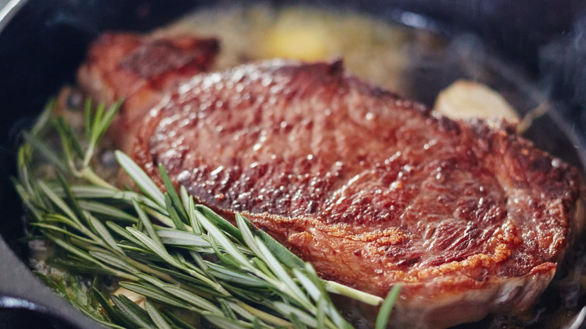

Pizza Recipe

Description
I don't know how steak can be messed up it's quite simple.
Ingredients
- 300g Ribeye cut
- Salt and Pepper
- Butter/Olive oil if steak isn't too marbled
Steps
- Season with salt and pepper
- Put pan on stove and max out heat, add oil/butter
- Leave steak on pan for 2 minutes each side for best results
- Enjoy.